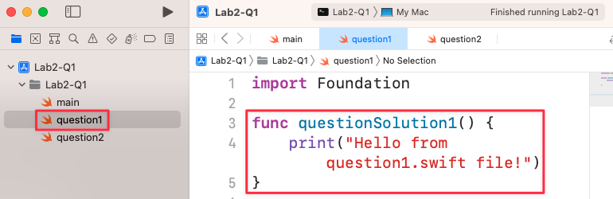
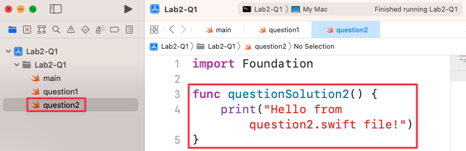
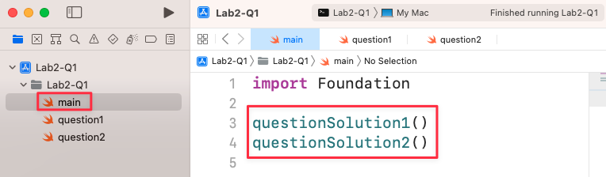
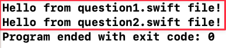
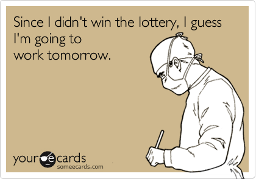
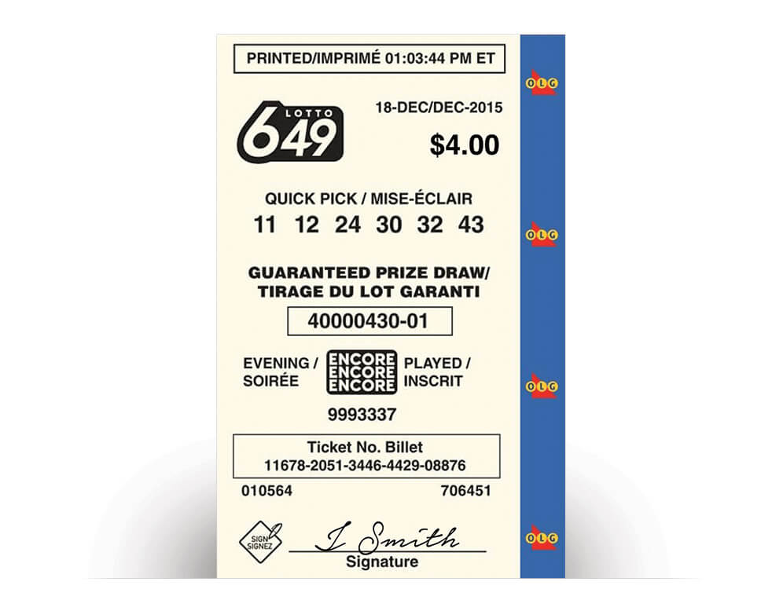
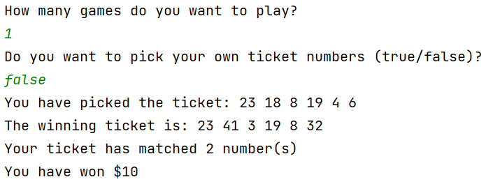
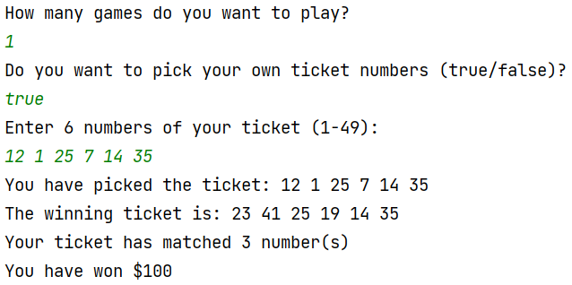
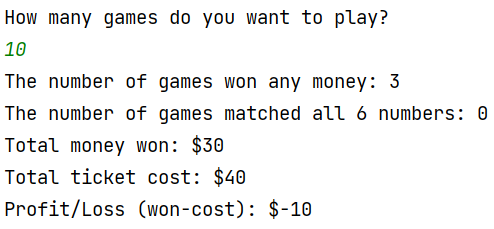
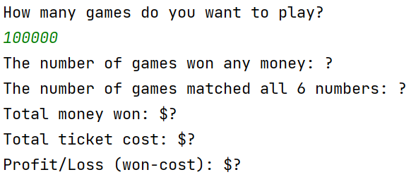

🚀 Steps to Start a New Swift Project in Xcode
Step 1: Create a New Project
Open Xcode. When the "Welcome to Xcode" window appears, click on "Create a new Xcode project".

Step 2: Choose a Template
In the template selection window, first select the "macOS" tab. Then, choose the "Command Line Tool" template from the available options and click "Next".

Step 3: Configure Project Options
On the next screen, fill in your project details. Enter a "Product Name" (for example, TaiXiu) and provide an "Organization Identifier" if needed. Make sure the "Language" is set to "Swift", then click "Next".

Step 4: Save the Project
Choose a location to save your new project, such as the "Developer" folder. Make sure to untick the checkbox labeled "Create Git repository on my Mac", and then click the "Create" button.

Step 5: Write and Run Your Code
In the left-hand navigation pane, select the main Swift file, usually named main.swift. Enter your Swift code in the central editor pane. To run your code, click the "Run" button (the play icon) located at the top of the window. You’ll see the output in the console area at the bottom of the Xcode interface.

📂 How to organize your swift files in Xcode
Step 1: Create a function in your first Swift file (question1.swift)
Instruction: In Xcode, you can organize your code into multiple files. Apart from the special main.swift file, you cannot write code directly at the top level of other Swift files. Instead, you need to place your code inside functions. In this step, a new file named question1.swift has been created. Inside this file, a function called questionSolution1() is defined to hold the code that will print a message.
Step 2: Create a function in your second Swift file (question2.swift)
Instruction: Similarly, create another file named question2.swift. Just like in the previous step, define a function within this file to hold your code. Here, a function named questionSolution2() is created to print a different message. This practice of separating code into different files and functions makes your project more organized and easier to manage.
Step 3: Call your functions from the main.swift file
Instruction: The main.swift file is the entry point of your application. When you run your program, the code inside main.swift is executed from top to bottom. Unlike other Swift files, you can write top-level code here without needing to wrap it in a function. To execute the code from your other files, you simply call the functions you created (questionSolution1() and questionSolution2()) from within main.swift.
Step 4: Run the program and observe the output
Instruction: After setting up your files and calling the functions in main.swift, run your project. The output console will display the results. The messages from both question1.swift and question2.swift are printed in the order they were called in main.swift. The message "Program ended with exit code: 0" indicates that your program ran successfully without any errors.
🗓️ Question 1. Switch
Description
Create a program that takes a number (Int) as an input and prints the corresponding day of the week using a Switch statement.
If the input was 5 then the function should print: "Friday".
If the input number does not match a day of the week then your program should print "Invalid day".
func dayOfTheWeek(day: Int) -> String{
//Complete the function body
}
print("Enter a day of a week (1-7):")
if let dayString = readLine(){
if let dayInteger = Int(dayString){
print("The day is \(dayOfTheWeek(day: dayInteger))")
} else {
print("Error: the correct format of day must be 1-7!")
}
}Sample Outputs:
Enter a day of a week (1-7):
2
The day is Tuesday
Enter a day of a week (1-7):
7
The day is Sunday
Enter a day of a week (1-7):
20
The day is an invalid day!
Enter a day of a week (1-7):
hello
Error: the correct format of day must be 1-7!📖 Question 2. Dictionary
Description
You have a dictionary to store interesting fun facts/figures of RMIT Vietnam. However, there are a few wrong pieces of information you need to fix:
- The number of graduates is 22500 instead of 20500.
- The number of student clubs is 60 instead of 50.
- The QS World Ranking is 140 instead 150
Also, we want to add a few more entries in our dictionary as following:
- yearFounded: 1887
- numberOfStaffs: 10000
//Don't change this dictionary
var funFactsRMIT: [String: Int] = [
"numberOfStudents" : 12000,
"numberScholarships": 1700,
"numberOfGraduates": 20500,
"numberMasterPrograms": 90,
"numberPhDPrograms": 3,
"numberStudentClubs": 50,
"QSWorldRanking": 150,
]
//Write your code here (update values of some entries, add new entries in the
//dictionary and print out some entry values like in the sample output)The expected output should be:
Here are some fun facts of RMIT:
The Number Of Students: 12000
The Number Scholarships: 1700
The Number Of Graduates: 22500
The Number Master Programs: 90
The Number Phd Programs: 3
The Number Student Clubs: 60
The Qs World Ranking: 140
The Year Founded: 1887
The Number Of Staffs: 10000
There are 9 facts in our fun facts dictionary about RMIT!❔ Question 3. Optionals
Description
First, create a function that returns the number of times an integer can be divided by another integer without a remainder. The function should return nil if the division doesn’t produce a whole number. Name the function divideIfWhole.
Then, write code that tries to unwrap the optional result of the function. There should be two cases: upon success, print "Yep, it divides \(x) times", and upon failure, print "Not divisible :((".
Finally, test your function:
- Divide 10 by 2. This should print "Yep, it divides 5 times."
- Divide 10 by 3. This should print "Not divisible :[."
func divideIfWhole(value: Int, divisor: Int) -> Int? {
// Complete the body of the function
}
print("Enter the value:")
let value = readLine() // Remember, this is an optional string
print("Enter the divisor:")
let divisor = readLine() // Remember, this is an optional string
// Complete your code below to optional binding to unwrap safely the values of
// divideIfWhole, these inputs of readLine()Sample Outputs:
Enter the value:
10
Enter the divisor:
2
Yep, it divides 5 times
Enter the value:
10
Enter the divisor:
3
Not divisible :((
Enter the value:
9
Enter the divisor:
3
Yep, it divides 3 times🏗️ Question 4. Structure
Description
After Elon Musk brought Twitter, he asked you to create the next big social networking app, exclusive to business leaders called TwitterByElonMusk.
Define a Structure
As part of this app, you need to define a struct called User to represent a user. This struct needs to hold onto the user's name, email (optional), number of followers, and whether they are active or not. The User struct needs to have the properties:
- name
- email?
- followers
- isActive
The Struct also needs to have a method called logStatus(). If the user is active, the method needs to print "XXX is working hard". Otherwise, it needs to print "XXX has left earth" (where XXX is the name of the user).
Initialise the Structure
After you have defined the struct, create a user with the name "Jerry" with 0 followers who are not active. Then print the status of this user to the console with logStatus().
// Define the User struct here
// Initialise a User struct here (for Jerry)
// Diagnostic code - do not change this code (to test your User struct)
print("\nDiagnostic code to test your User struct:")
var musk = User(name: "Elon", email: "elon@tesla.com", followers: 2001, isActive: true)
musk.logStatus()
print("Contacting \(musk.name) on \(musk.email!) ...")
print("\(musk.name) has \(musk.followers) followers")
// sometime later
musk.isActive = false
musk.logStatus()To succeed in this question, the sample output must be:
Jerry has left earth
Diagnostic code to test your User struct:
Elon is working hard
Contacting Elon on elon@tesla.com ...
Elon has 2001 followers
Elon has left earth🏛️ Question 5. Class
Description
Write a Point class that has private attributes for coordinates x and y. The class has Initializers to initialize the values for x and y of the point.
In the class, write a method distance to compute the distance from the current point and the given target point.
Note: the distance d between two points A and B can be computed with the following formula
d = sqrt((xA - xB)2 + (yA - yB)2)
To test the class Point and the distance method, create some Point instances and test them.
class Point {
// complete the body of this class Point
// declare properties for x and y coordinates
// declare the initializer (constructor)
// declare the function distance
func distance(target: Point) -> Double {
// complete the body of this function
}
}
// Write your code to read user inputs for two points coordinations
// Convert from string input to double numbers
// Create two instances of two points and call distance to calculate the distance of
// two pointsSample Outputs (yours can be different):
Enter the first x and y:
5 5
Enter the second x and y:
7 5
The distance between X and Y is 2.000
Enter the first x and y:
3 3
Enter the second x and y:
4 4
The distance between X and Y is 1.414
Enter the first x and y:
-2.5 4
Enter the second x and y:
3 -5
The distance between X and Y is 10.548🎲 Question 6. Randomisation
Description
You are going to create a password generator. We have created an array called the alphabet which contains all 26 letters in the alphabet.
Write some code to randomly pick 6 letters out of the alphabet to create a random 6 character password.
HINT: You can add characters together with the "+" symbol. e.g.
var a = "Jerry"
var b = "Mouse"
var c = a + b
print(c) //The output would be: "Jerry Mouse"Alright, complete your code as below here:
let alphabet =
["a","b","c","d","e","f","g","h","i","j","k","l","m","n","o","p","q","r","s","t","u","v",
"w","x","y","z"]
//The number of letters in alphabet equals 26
let password = //Replace this comment with your code.
print(password)NOTE: The variable password should be a String of characters like "vacbae" or "abcefg", it should not be an array.
🧑💻 Question 7. Closure
Description
Given a function to take two integer numbers and a closure function which will call the closure function with a and b as arguments.
Your task is to call doMath function and write inline functions which satisfy the comments below:
// Do not modify this function
func doMath(a: Int, b: Int, operation: (Int, Int) -> Int) {
print(operation(a, b))
}
// Call doMath function and provide an inline closure so that it will return the
// larger value between two numbers and print it out
// Call doMath function again and this time provide an another inline closure
// so that it will multiple two numbers together and print it outNote: If possible, could you please make those inline closures to be in the form of trailing closures so it look neat and clean (check the lecture or this link: https://docs.swift.org/swift-book/LanguageGuide/Closures.html)
🤑 Question 8. Challenge question
Description
The 649 Lotto Lottery is a popular lottery game in Canada, offering players the chance to win significant cash prizes twice a week through a draw of six numbers from a pool of 49. Established in 1982, it is renowned for its large jackpots and additional bonus draws.
Noel Patricio won the Lotto 6/49 prize worth $68 million and is “Ontario’s newest multimillionaire”
Let’s build a lottery simulation 649 Lotto Lottery.
A lottery ticket is $4.
A ticket having 6 different numbers (from 1 to 49) (Can be repeated)
On a Saturday, they draw the lottery, and the winning numbers are: 11, 43, 24, 30, 5, 43
Match at each position:
- Match One or Two numbers to get a small prize. ($10)
- Match Three numbers to get a small prize. ($100)
- Matching Four numbers gets a bigger prize. ($1000)
- Matching Five is even bigger. ($5000)
- Matching ALL SIX of the numbers you might win millions. ($5 million in cash)
In the example, we got matches at position 1, 3, 4, 6 (4 numbers) = $1000
Requirements and Advice:
you can use both structs and classes to organize your code effectively. Here are some guidelines and an example to help you structure the code:
- Use structs to represent simple data models like a lottery ticket or a set of lottery
numbers. Structs are suitable here because they are value types and provide copy-on-write
behavior, which is useful for representing distinct tickets and results:
- Represents a lottery ticket with six numbers.
- Provides a static method to generate a random ticket.
struct LotteryTicket {
// fill in the properties and functions
}- Use classes for managing the lottery game logic, such as drawing winning numbers and
calculating prizes. Classes can manage shared state and provide more flexibility for future
expansions of game rules.
- Manages the winning numbers and game logic.
- Provides methods to draw winning numbers and check the prize based on a given ticket.
class LotteryGame {
// fill in the properties and functions
}- In your main program:
- Creates an instance of LotteryGame.
- Draws winning numbers and prints them.
- Creates a user ticket with predefined numbers and checks for a prize.
- Prints the prize amount.
Task 1:
You need to write a simple program that allows you to buy a ticket with six random numbers, and generate the winning numbers and return what kind of prize you won (one game).
If you choose to play one game then you can have a choice to pick your own ticket numbers. But when you choose to play many games, to make it a realistic simulation of the lottery, then ticket numbers must be randomly generated.
Here is just an example of an implementation of 649 Lottery, you can try something different:
 Task 2:
figure out if you got profit or loss when you learn this game many times (just like how a normal person keeps buying lottery tickets for many years). Each game round, a person will buy one ticket and compare it to one winning number. Note, it means each game has a different winning ticket number and the player only buys one ticket for each game.
Imagine you play this game 10 times:
Imagine you play this lottery game up to 100,000 times, can you figure out if you actually profit or lose in the long run? (? is for you to figure out)
Task 3:
Now, it is pretty fun to figure out the long run statistics of 649 lottery game, but you know that one of the biggest Vietnamese lottery game, Vietlott, has very similar rules like our 649 lottery game:
- Each ticket costs 10000 VND.
- The ticket also got 6 numbers.
- Each number goes up to 45 only, instead of 49.
Here is the structure of Vietlott prizes:
| Prize Type | Result | Money Prize (VND) |
|---|---|---|
| Special Prize | Match 6 numbers | At least 12 billion |
| First Prize | Match 5 numbers | 10 billion |
| Second Prize | Match 4 numbers | 300.000 |
| Third Prize | Match 3 numbers | 30.000 |
Based on this information, could you roughly calculate the statistics of winning Vietlott and compare that to our 649 lottery game? Which lottery got a better chance?
Every week, they will draw the winning numbers and you would always buy one ticket to play everyday. After 1000 weeks (games) (20 years of your life), could you simulate how much money you have lost or profit by playing the Vietlott lottery?